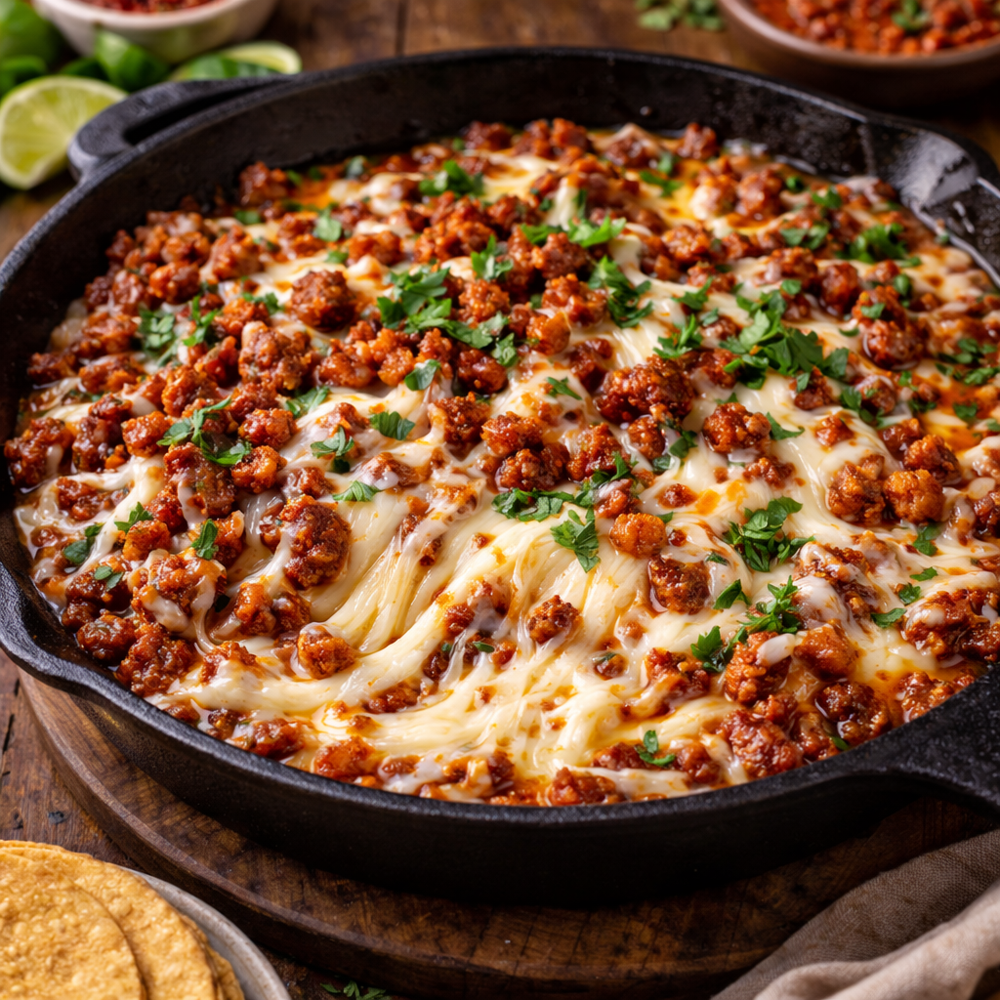
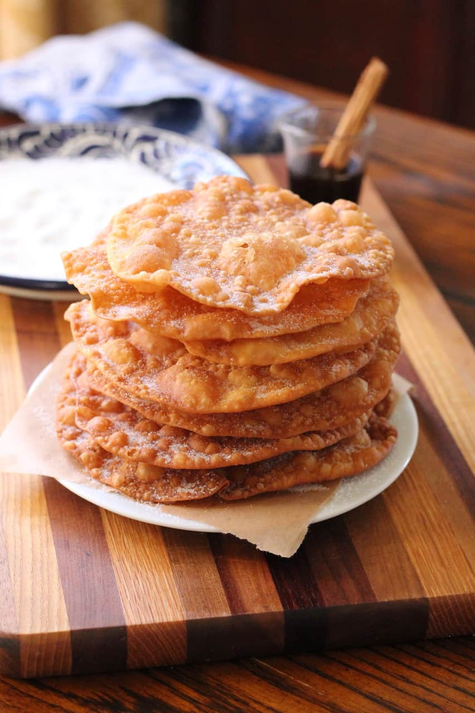
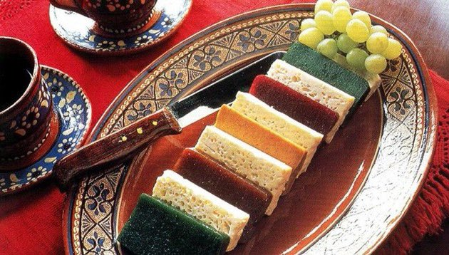
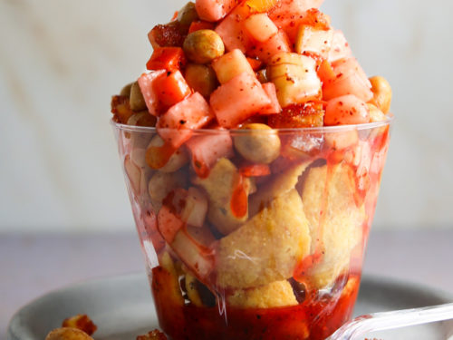
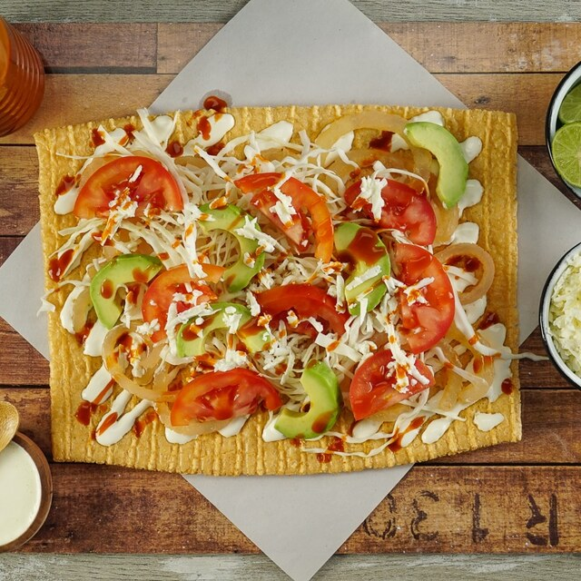

Choriqueso
Preparado con choriso freido junto con queso oaxaca derretido

Costo de cada plato: $50 pesos.
Boneless de Pollo
Preparados en freidora y acompañados con aderezo o solos

Costo de cada plato: $46 pesos.
Buñuelos Caseros
Preparados con harina, huevo y piloncillo

Costo de cada plato: $18 pesos.
Ates de sabores.
Preparados de diferentes sabores: Manzana, guayaba, coco y limon

Costo de cada plato: $24 pesos.
Platanos Fritos Preparados
Preparado con platanos machos, con crema, lechera, chispas de chocolate y cerezas

Costo de cada plato: $45 pesos.
Tamal de dulce
Preparado con masa de nixtamal, colorante, pasas, canela, vainilla y mermelada de zarzamoras

Costo de cada plato: $22 pesos.
Papas Locas
Preparado con papas fritas con salsa valentina, chamoy, miguelito, cacahuates, gomitas, zanahoria y jicama rallada.

Costo de cada plato: $24 pesos.
Pepinos Preparados
Preparados con pepinos, salsa valentina, cacahuates, chamoy, gomitas, zanahoria y jicama picadas

Costo de cada plato: $22 pesos.
Chiharron preparado
Preparado con chicharron, crema, col picada, jitomate picado, aguacate, cueritos, salsa valentina.

Costo de cada plato: $26 pesos.